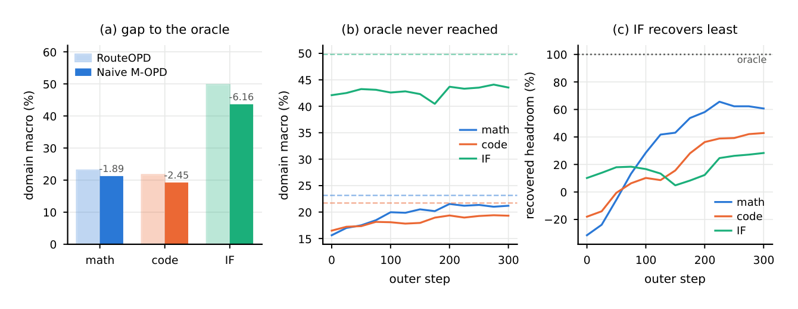
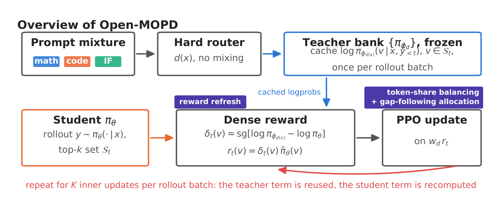

五分钟重建
把多个域专家一起蒸馏给学生，不能只按 prompt 数量算预算。长回答会贡献更多 token，各域奖励幅度会变化，同一批轨迹复用时奖励还会变旧。
平衡 token 份额
按每个域实际贡献的 token 份额加权损失，补偿回答长度差，不改 prompt 采样频率。
跟随剩余差距
把当前奖励幅度作为师生分布差的读数，让仍有差距的域获得更多预算。它不是完整能力差的测量。
刷新学生奖励项
教师 logprob 缓存复用；用 PPO 已算出的当前学生 logprob 更新 dense reward。轨迹本身仍是旧学生采样的。
具体例子（教学假设）：两个域各一条回答，长度为 2 与 8。未经加权，token 份额是 20% 与 80%；若目标各半，份额权重为 0.5/0.2=2.5 和 0.5/0.8=0.625。这里只隔离第一层预算。
边界：教师冲突在该论文的同源教师、3B 学生、oracle 路由设置里不是主要瓶颈。结论不覆盖任意教师组合。clip fraction 也不等于全部网络梯度被冻结的比例。
换个条件看机制
同一批 rollout 只更新一次，即 K=1，reward refresh 还在修复多轮更新后的奖励陈旧吗？
没有这种多轮陈旧需要修复。K>1 时刷新奖励项才有作用；即使刷新，也没有把旧轨迹变成当前策略的新采样。
2026-10-04：讲解与练习待试用，本次未进行理解检验；此处不记录复测通过。
一页看懂
02问题
工业界大规模用 multi-teacher OPD（DeepSeek-V4 蒸 10+ 教师、Kimi K3 用 9 个），但没人回答过 naive 合并为什么掉分。用 oracle routing 受控实验切开混淆变量后：integration gap 3.50 分，naive 只拿回 35.6% 的提升，IF 域掉分是 math 的 3.3 倍。
方法
先枪毙流行嫌疑人 teacher conflict（三重证伪），锁定真凶「三层预算错配」：名额（token 数量）、汇率（reward 幅度）、财报时效（新鲜度），分别对应三个正交修复机制，可独立验证可叠加。
结果
回收率 35.6% → 83.4%（28.05 → 31.24，距三模型上界 88% 只剩一步）。代价：仅 3B、三域、oracle 路由验证，路由有误的场景未测。

Open-MOPD 按 token 份额、奖励幅度和奖励新鲜度分配多教师蒸馏的训练预算，缓解各域优化失衡。
关键机制：先证伪 teacher conflict
03三个 teacher 同源（同一 SFT checkpoint 分叉），直觉上很容易「打架」。三重检验支持它不是该设置的主要瓶颈：
| 证据 | 数值 | 含义 |
|---|---|---|
| token 级教师分歧 c_t | 全程均值 0.126 nat | 冲突判据是 1 nat（概率比 e≈2.7），差一个数量级 |
| 高冲突 token 占比 | 全程仅 0.62% | 分歧最大的 IF 域也才 3.9% |
| 决定性反事实实验 | mask 掉 top 1%~20% 高冲突 token | 结果全部降分（−0.52~−0.83）：高分歧 token 不是噪声，可能携带领域信息 |
真凶是预算错配。类比三个部门共用培训预算的三件糟心事：名额分配 bug（math 响应 10,500 token，IF 才 409，长度差 25 倍；IF 占 20.3% 名额只分到 0.99% 预算）；汇率偷偷变（各域收敛速度不同，25 步内 IF 实际份额从 48.7% 滑到 9%）；用昨天的财报做今天的决策（rollout batch 复用 K=4 次，K=4 时 75.8% 的 token 已被 PPO clip）。
关键机制：三个失衡对应三个正交修复
04
| 机制 | 时间尺度 | 怎么做 |
|---|---|---|
| token-share balancing（修名额） | batch 内 | loss 按域加权：目标份额 ÷ 实际 token 份额，IF 每 token 放大约 48 倍精确补偿。不做过采样：要拿 1/3 预算 IF 得放大 33.6 倍，会挤掉 math/code 长链的监督密度 |
| gap-following allocation（修汇率） | 训练全程 | 权重乘 (m_d/m_ref)^α，clamp [0.05, 20]。m_d = E|log π_ϕ − log π_θ| 是师生差距的直接读数不是代理：离 teacher 远的域多给预算，收敛的自动让出。方向反了会爆炸：反向归一化成正反馈环，step 74 训练崩溃 |
| reward refresh（修时效） | rollout 周期内 | 教师项一次 prefill 永久缓存；学生项的重算恰好免费（PPO 每次内更新本来就要算当前学生 logprob 做 importance ratio）。轨迹本身的陈旧只有重新 rollout 才能换（生成占一步 46.5% 最贵），refresh 不碰，剩余交给 PPO 裁剪目标缓和更新 |
refresh 的零开销实证：dense reward 计算只占一步 2.2%，刷新前 27.8s / 后 27.3s，差异在步间波动内。开销不是新增，是搬了位置。
关键数字
05| 消融阶梯（每行只改一件事） | 总分 | 增量 |
|---|---|---|
| Naive M-OPD（K=1） | 28.05 | 基线 |
| + token-share balancing | 29.22 | +1.17（几乎全来自 IF：43.64→47.53） |
| + gap-following allocation | 29.94 | +0.72 |
| 切到 K=4 + reward refresh（Open-MOPD） | 31.24 | +0.81 |
baseline：RFT 离线蒸馏 12.6%、单模型混合域 RL 49.3%、参数合并 ParamMerge-TA 71.7%（需同源 teacher，仍低于本文）。局限：仅 3B 规模、三域、oracle 标签路由，路由有误场景未验证；论文自设无 limitation 章节。
卡壳点
06Q：反向归一化的正反馈环：初答只说「把已经学好的带崩掉」，链条断了。
奖励幅度是当前采样 token 上的师生 logprob 差读数。它反映这些条件下的分布差，不是完整任务能力的直接测量。预算跟随尚未缩小的差距，而不是给已收敛域反向加码。
Q：reward refresh：第一轮完全没理解，全文最大卡壳点。（09-07 费曼复测二次深化）
大白话直觉版（老师、学生与发霉的分数）：
- 场景：大模型生成太慢（占 46.5% 耗时），所以学生写完一份作业草稿，要连续复用 4 轮内更新（$K=4$）来学，而不是每步重新写。
- 病根：同一批 rollout 更新多轮后，学生已经变了，奖励里却仍用 rollout 时的学生 logprob。这个旧差值不能反映当前师生差。论文在 K=4 时报告约 75.8% 的 clip fraction，显示复用中的策略偏移较大。
- Clip 的边界：clip fraction 通常统计比率落到阈值外的比例，不能直接说 75.8% 的全部网络梯度被冻结。裁剪目标是否变平还取决于优势符号；其他样本与损失仍可改变共享参数。
- 为什么几乎没有额外开销？：教师冻结，其 logprob 已缓存；PPO 每次更新为了算 ratio，本来就计算当前学生 logprob。refresh 用这些已有值重建奖励，不加教师或学生 forward，也不重新生成。论文计时差异在步间波动内。
- 仍然旧的是什么？：生成轨迹和前缀仍来自 rollout 时的学生。刷新奖励不等于重新采样；K=1 时也没有多轮奖励陈旧可修。
为什么不直接过采样 IF，也不把 reward 幅度归一化掉？
过采样：要拿 1/3 token 预算 IF 得放大 33.6 倍，math/code 长链 prompt 被挤到 0.7 倍，长链推理的监督密度没法维持；加权法保住 prompt 多样性（各域长度本就接近时，过采样与加权等价，退化无害）。不抹幅度：m̄ 不是噪声，它是「还差多少没学」的仪表盘，抹掉等于自毁 gap-following 的信号源。
关联与来源
07RELATED
SOURCE
V4QD2H72 / 5TGI85P9（summary 在 §4 截断，机制细节由原文 PDF 补齐）